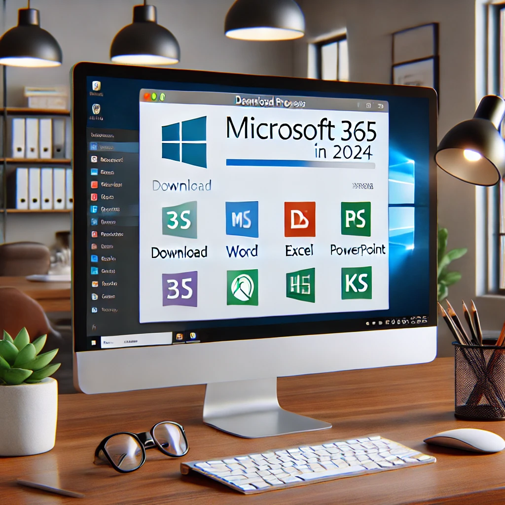
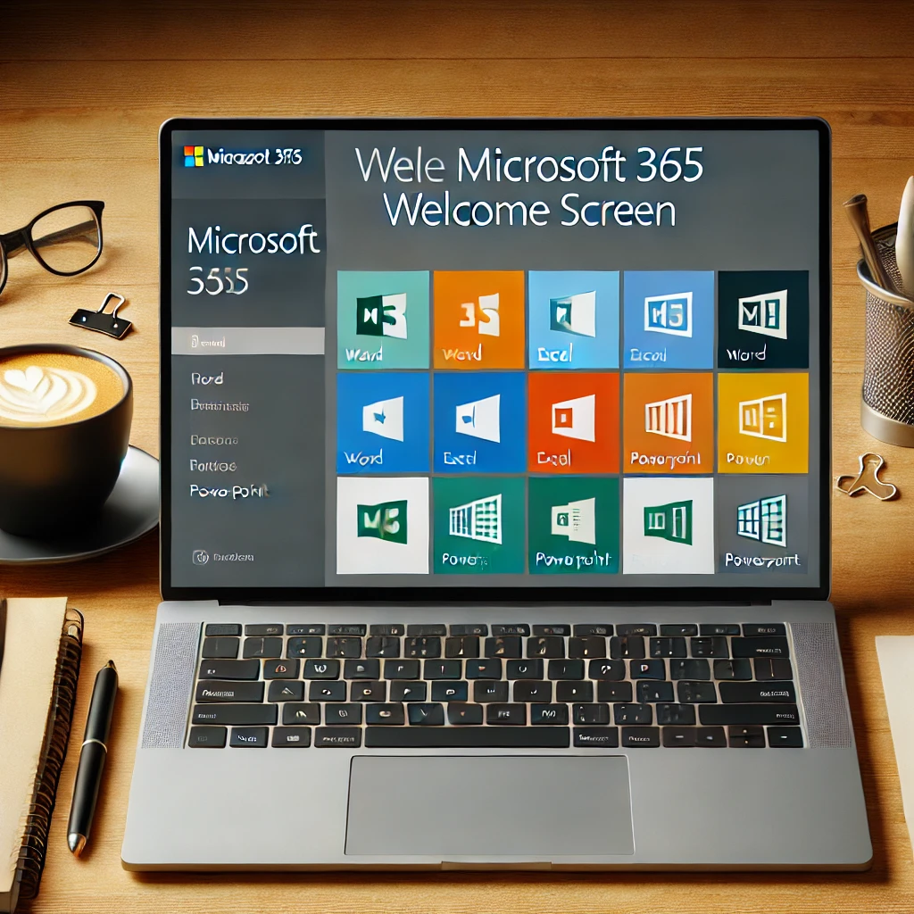

How to Download and Install Microsoft 365 for Free in 2024
Are you looking for a way to download and install Microsoft 365 for free in 2024? This comprehensive guide will take you through every step to ensure you have a seamless experience. Microsoft 365 offers a wide range of tools such as Word, Excel, PowerPoint, and OneNote, making it essential for students, professionals, and businesses. We will show you how to get it up and running without any hassle.
What is Microsoft 365?
Microsoft 365, formerly known as Office 365, is a subscription-based service that offers a collection of productivity tools including Word, Excel, PowerPoint, Outlook, and more. This suite is cloud-based, meaning you can access your documents, spreadsheets, and presentations from anywhere, anytime. In 2024, Microsoft 365 remains one of the most powerful office software solutions available, and we’re here to show you how to install it for free.
Step 1: Download Microsoft 365 for Free
The first step is to download Microsoft 365. You can visit the official Microsoft website to access the trial version or search for reliable sources that provide free downloads. Before downloading, make sure your device meets the system requirements to ensure compatibility:
- Windows 10 or macOS 10.14 (Mojave) and later versions
- At least 4 GB RAM
- 4 GB of available disk space
- Internet access for downloading and activation
By downloading Microsoft 365, you will have access to the full suite of Office applications, including Word, Excel, PowerPoint, and Outlook.
Step 2: Installing Microsoft 365
Once the download is complete, it’s time to install Microsoft 365 on your device. Follow these instructions carefully:
- Locate the downloaded file, usually found in your "Downloads" folder.
- Double-click the installer to start the installation process.
- Follow the on-screen prompts, such as choosing the installation location and agreeing to the terms and conditions.
- Wait for the installation to finish. It might take a few minutes.
Step 3: Activating Microsoft 365
After the installation, the next step is activation. You can use your Microsoft account to activate the trial version or search for free activation keys available online. For the best experience, consider purchasing a subscription to access all the premium features:
- Open any Office application like Word or Excel.
- Click "Activate" or "Sign in."
- Enter your Microsoft account details or the activation key.
- Follow the prompts to complete the activation process.
Maximizing Microsoft 365’s Benefits
Microsoft 365 offers numerous advantages such as cloud storage, regular updates, and advanced collaboration tools. Here are some tips on how to get the most out of your Microsoft 365 experience:
- Utilize OneDrive for file storage and sharing.
- Explore Microsoft Teams for communication and collaboration.
- Take advantage of real-time co-authoring in Word and Excel.
Troubleshooting Installation Issues
Encountering issues while installing Microsoft 365? Here are some common problems and solutions:
- Error Code 30174: Ensure you have enough disk space and try again.
- Installation Hangs: Restart your computer and disable antivirus software temporarily.
- Activation Issues: Double-check your internet connection and activation key.
Why Choose Microsoft 365 in 2024?
Microsoft 365 remains the top choice for productivity software in 2024 due to its versatility, cloud integration, and frequent updates. With Microsoft 365, you have the flexibility to work from any device and collaborate with others in real-time, making it a valuable tool for businesses, students, and professionals alike.
Conclusion
Downloading and installing Microsoft 365 for free in 2024 is easier than ever with this step-by-step guide. Follow the instructions carefully to ensure a smooth setup, and enjoy the benefits of Microsoft 365 for all your productivity needs. Don't forget to explore all the features and tools that Microsoft 365 offers to maximize your efficiency and workflow.